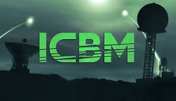
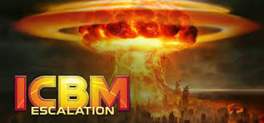

Essa é a página dos meus jogos favoritos.
Project Wingman (Projeto Wingman) e Ace Combat (Combate dos Ás)
Esses dois jogos são de combate aéreo, onde o jogador controla um avião
de combate e deve completar missões para avançar na história. O jogo tem
gráficos incríveis e uma jogabilidade fluida, tornando-se um dos meus
jogos favoritos.
Outra coisa que esses jogos tem que eu aprecio é o irrealismo em suas
mecânicas de jogo, o que permite manobras impossíveis por puro
entreterimento, especialmente no caso do Project Wingman, onde o jogador
pode usar um módulo chamado AOA Limiter, que permite ao avião realizar
manobras acrobáticas extremas, como loopings e giros de 360 graus, sem
perder o controle do avião. Isso torna o jogo muito divertido e
emocionante de jogar.


ICBM
Um jogo de estratégia que passa na Guerra Fria, onde você controla uma
região do mundo e deve gerenciar a sua defesa enquanto o mundo inteiro
corre em uma competição de produção de armas nucleares.
O jogo é bem divertido e tem bastante potencial de replay, ou seja,
jogar muitas vezes, especialmente com os mods, que aprofundam o ângulo
estratégico com mais tecnologias e mais maneiras de destruição
apocalíptica.
Lembre se, em guerra nuclear, não existe vencedor. Apenas menos
perdedor. Então seja aquele que perde menos.
Em um tom mais otimista, esse jogo tem uma continuação chamada ICBM:
Escalation, com IAs melhoradas e algumas coisas novas inspiradas em mods
do ICBM original.

